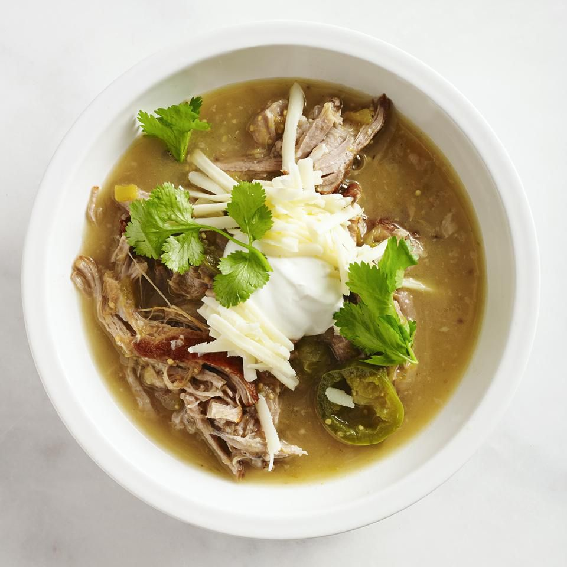

Slow Cooker Guisado Verde

Description
An easy tomatillo and pork stew that is my boyfriend's favorite. Make it as spicy as you like by adding more or less jalapenos, or do not add any if you have a more tender palate.
Ingredients
- 2 tablespoons vegetable oil
- 2 pounds boneless pork shoulder
- 1 large onion, coarsely chopped
- 3 cloves garlic, chopped
- 2 (12 ounce) cans tomatillos, drained and chopped
- 1 (7 ounce) can diced green chile peppers
- 2 fresh jalapeno peppers, sliced
- ½ cup fresh chopped cilantro
- 1 teaspoon dried oregano
- salt and pepper to taste
- 1 quart water
- 1 cup shredded Monterey Jack cheese
- ¼ cup sour cream
- 4 sprigs fresh cilantro, for garnish